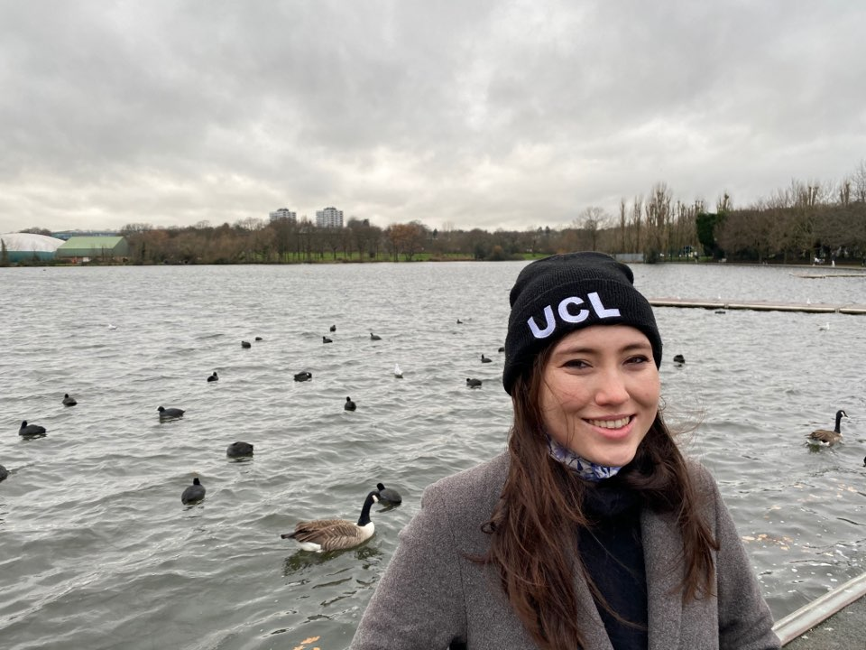

about me
I am a Machine Learning Lead at Passionfruit. I work on making and deploying AI for marketing teams, and my research interests centre on NLP and neurocomputation for logical reasoning tasks. I am also an affiliate researcher at UCL, with Mirco Musolesi, looking at whether language models reason like humans. Previously, I was a machine learning researcher at Eigen Technologies (part of Sirion), and a Research Fellow in the O’Keefe Lab at the Sainsbury Wellcome Centre. I completed my PhD in the Bizley Lab at UCL, funded by the European Research Council. My doctoral research investigated neural correlates of auditory object recognition and perceptual constancy during everyday listening. Perceptual constancy is the act of recognising auditory objects across identity-preserving variation. For instance, we still understand that the sound of a siren indicates danger or an emergency, even if the siren’s pitch is different than what you are used to (e.g. when you are abroad on holiday). My doctoral research sought to elucidate which neural mechanisms are responsible for maintaining the meaning of this auditory object (in this case, the meaning of the siren) even when we manipulate this object in terms of tone or pitch.

During my PhD, I’ve used machine learning to analyse terabytes of neural data we collect in the lab (it would be impossible to do this manually!). First, I used dynamic time warping to clean longitudinal multi-unit data, which showed that auditory cortex neurons could be maintained over weeks of recording (i.e. we can capture the same cluster of cells over many weeks). Now we use automated spike sorting approaches (mountainsort4 and Kilosort) on CPU/GPU cluster computing. Towards the end of my PhD, I became super interested in neural manifold research and neuroAI in general, especially using the theory of collective intelligence (where network nodes take on specialised roles similar to neuronal physiology) to create robust, adaptable systems.
During my PhD, I taught computer science as a postgraduate teaching assistant (PGTA) for COMP0034 and COMP0035. In this course, we taught the principles of software engineering and web development in a hands-on data visualisation project that encompasses academic terms 1 and 2.
I enjoy working on my personal coding projects (learning Swift), running, cycling, and bird-watching in my free time. You can reach me via email or Twitter (@carlagriffs).